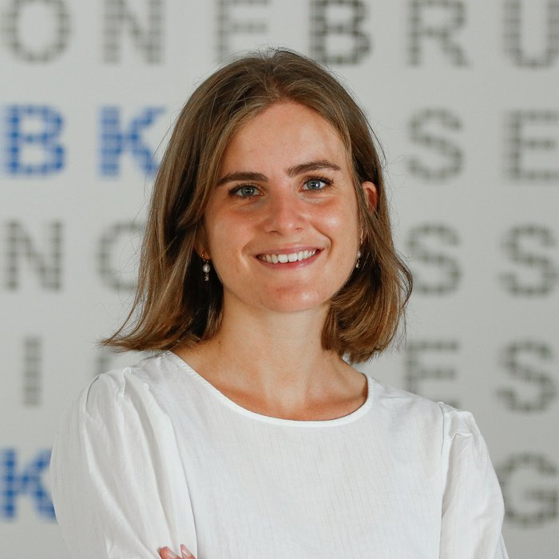

Elena Donini
Researcher @ Remote Sensing for Digital Earth, Fondazione Bruno Kessler

I am a researcher at the Remote Sensing for Digital Earth (RSDE) unit of the Center for Digital Society, Fondazione Bruno Kessler (FBK), Trento, Italy, and I collaborate with the Remote Sensing Laboratory (RSLab) of the University of Trento.
I design machine learning methods for the analysis of radar sounder data for planetary exploration and Earth observation — segmentation, denoising, super-resolution, change detection and content-based retrieval of radargrams, from the ice sheets of Greenland and Antarctica to the subsurface of Mars, the Moon and the icy moons of Jupiter.
I am a member of the science teams of RIME on ESA's JUICE mission and of VesPER, the subsurface radar sounder on ESA's EnVision mission to Venus, and I contributed to studies for a radar sounder for the moons of Uranus (ASI–NASA).
I received my Ph.D. (cum laude) in Information and Communication Technology from the University of Trento and FBK in 2021, supervised by Francesca Bovolo and Lorenzo Bruzzone. I love science communication — I organize Pint of Science Trento-Rovereto and TEDx Trento.
I work and live in Trento, Italy. I am always happy to start new collaborations — drop me an email!
news
latest publications
news
Updates on research, talks and outreach.
| Sep 2026 | 🤖 Talked about the ESA JUICE mission at the FBK Summer Camp robotics course. |
| Jul 2026 | 📄 Papers accepted at SPIE Sensors + Imaging 2026 (Edinburgh, 14–17 Sep): “Self-Supervised Deep Learning for Bitemporal Change Detection in Polar Radar Sounder Data” (E. Donini, F. Bovolo), and EPSC 2026 (The Hague, 6–11 Sep). Congrats to all the authors! 🎉 See you there! 👋 |
| May 2026 | 📚 Panel “Di chi è la scienza?” at the Salone Internazionale del Libro in Turin. |
| May 2026 | 📄 Papers accepted at IGARSS 2026 (Washington, D.C., 9–14 Aug). Congrats to all the authors! 🎉 See you there! 👋 |
| May 2026 | 🎧 Guest on the RAI podcast Quo datis — listen on RaiPlay Sound ▶ |
| Feb 2026 | 📺 Guest on Mattino Insieme (Trentino TV) and on the RAI podcast A caccia dell'IA, talking about AI and space exploration — listen on RaiPlay Sound ▶ |
| 2026 | 🎙️ Joined the organizing team of TEDx Trento. |
| Nov 2025 | 🎤 Talk at TEDx Trento 2025: “Space, Ice and AI: When the Future Becomes Radar” — watch it on YouTube ▶ |
| 2025 | ✈️ Received an IEEE IGARSS travel grant. |
| 2025 | 📄 1 paper accepted at MIGARS 2025: “A Preliminary Study on the Detection of Glacial Lake Outburst Flood in Norway Using Sentinel 2 Imagery” (L. Bergamasco, E. Donini, R. Lappe, M. Calovi, F. Bovolo). Congrats to all the authors! 🎉 |
| May 2025 | 📄 1 paper accepted at IGARSS 2025 (Brisbane): “Co-Registration Analysis of Coherent Multitemporal Radargrams” (E. Donini, M. Hoyo García, J. Paden, F. Bovolo). Congrats to all the authors! 🎉 |
| Sep 2024 | 🗣️ Talk at Wired Next Fest Trentino 2024 (Rovereto) — “Aziende in orbita”, on AI and space research. |
| Jul 2024 | 📄 1 paper accepted at SPIE Remote Sensing 2024: “A Preliminary Study on the Multitemporal Analysis of Cryosphere Radar Sounder Data” (E. Donini, M. Hoyo García, F. Bovolo). Congrats to all the authors! 🎉 |
| May 2024 | 📄 1 paper accepted at IGARSS 2024 (Athens): “Hierarchical Learning for the Unsupervised Segmentation of Radar Sounder Data Acquired on the Cryosphere” (E. Donini, F. Bovolo). Congrats to all the authors! 🎉 |
| Apr 2024 | 🛰️ Visiting researcher at ESA ESTEC (Noordwijk) through the ESA Archival Research Visitor Programme, working on content-based retrieval of MARSIS radargrams — watch the FBK video ▶ |
| 2024 | 📰 Paper published in Astronomy & Astrophysics: “Observation of Solar Radio Burst Events from Mars Orbit with the Shallow Radar Instrument” (C. Gerekos, G. Steinbrügge, I. C. Jebaraj, A. Casillas, E. Donini, B. Sánchez-Cano, M. Lester, J. Magdalenić, S. T. Peters, A. Romero-Wolf, D. D. Blankenship). Congrats to all the authors! 🎉 |
| 2024 | 📰 Paper published in IEEE Transactions on Geoscience and Remote Sensing: “Super-Resolution of Radargrams With a Generative Deep Learning Model” (E. Donini, L. Bruzzone, F. Bovolo). Congrats to all the authors! 🎉 |
| 2023 | 📰 Paper published in Systems: “An Infrastructure Cost and Benefits Evaluation Framework for Blockchain-Based Applications” (M. Pincheira, E. Donini, M. Vecchio, R. Giaffreda). Congrats to all the authors! 🎉 |
| May 2023 | 📄 2 papers accepted at IGARSS 2023 (Pasadena): “Deep Learning for Unsupervised Denoising of Radar Sounder Data” (E. Donini, A. Zuech, L. Bruzzone, F. Bovolo) and “A Preliminary Statistical Analysis of Type-III Solar Burst Detections in MRO SHARAD Data” (A. Casillas, S. T. Peters, G. Steinbrügge, E. Donini, I. C. Jebaraj, J. Magdalenić, A. Romero-Wolf, D. D. Blankenship, C. Gerekos). Congrats to all the authors! 🎉 |
| 2023 | 📰 Paper published in IEEE Transactions on Geoscience and Remote Sensing: “A Weakly Supervised Transfer Learning Approach for Radar Sounder Data Segmentation” (M. Hoyo García, E. Donini, F. Bovolo). Congrats to all the authors! 🎉 |
| Nov 2022 | 📰 Paper published in Sensors: “A Decentralized Architecture for Trusted Dataset Sharing Using Smart Contracts and Distributed Storage” (M. Pincheira, E. Donini, M. Vecchio, S. Kanhere). Congrats to all the authors! 🎉 |
| 2022 | 📄 1 paper accepted at BLOCKCHAIN 2022: “Towards an Infrastructure Cost Model for Blockchain-Based Applications” (M. Pincheira, E. Donini, M. Vecchio, R. Giaffreda). Congrats to all the authors! 🎉 |
| Jul 2022 | 📄 1 paper accepted at SPIE Remote Sensing 2022: “Unsupervised Semantic Segmentation of Radar Sounder Data Using Contrastive Learning” (E. Donini, M. Amico, L. Bruzzone, F. Bovolo). Congrats to all the authors! 🎉 |
| May 2022 | 📄 1 paper accepted at IGARSS 2022 (Kuala Lumpur): “An Unsupervised Deep Learning Method for the Super-Resolution of Radar Sounder Data” (E. Donini, A. Kasibovic, M. Hoyo García, L. Bruzzone, F. Bovolo). Congrats to all the authors! 🎉 |
| 2021 | 📰 3 papers published in IEEE Transactions on Geoscience and Remote Sensing: “A Deep Learning Architecture for Semantic Segmentation of Radar Sounder Data” (E. Donini, F. Bovolo, L. Bruzzone), “An Unsupervised Fuzzy System for the Automatic Detection of Candidate Lava Tubes in Radar Sounder Data” (E. Donini, L. Carrer, C. Gerekos, L. Bruzzone, F. Bovolo) and “An Approach to the Assessment of Detectability of Subsurface Targets in Polar Ice From Satellite Radar Sounders” (S. Thakur, E. Donini, F. Bovolo, L. Bruzzone). Congrats to all the authors! 🎉 |
| Jul 2021 | 📄 1 paper accepted at SPIE Remote Sensing 2021: “Transfer Learning for the Semantic Segmentation of Cryosphere Radargrams” (M. Hoyo García, E. Donini, F. Bovolo). Congrats to all the authors! 🎉 |
| May 2021 | 🎓 Ph.D. (cum laude) in ICT at the University of Trento and FBK. |
| May 2021 | 📄 3 papers accepted at IGARSS 2021 (Brussels): “An Unsupervised Deep Learning Method for Subsurface Target Detection in Radar Sounder Data” (E. Donini, F. Bovolo, L. Bruzzone), “Automatic Segmentation of Ice Shelves with Deep Learning” (M. Hoyo García, E. Donini, F. Bovolo) and “STRATUS: A New Mission Concept for Monitoring the Subsurface of Polar and Arid Regions” (L. Bruzzone, F. Bovolo, L. Carrer, E. Donini, S. Thakur). Congrats to all the authors! 🎉 |
| Oct 2020 | 📄 Paper published in the ISPRS Annals: “A Blockchain-Based Approach to Enable Remote Sensing Trusted Data” (M. Pincheira, E. Donini, R. Giaffreda, M. Vecchio). Congrats to all the authors! 🎉 |
| May 2020 | 📄 1 paper accepted at IGARSS 2020: “EnVision Mission to Venus: Subsurface Radar Sounding” (L. Bruzzone, F. Bovolo, S. Thakur, L. Carrer, E. Donini, C. Gerekos, S. Paterna, M. Santoni, E. Sbalchiero). Congrats to all the authors! 🎉 |
| 2020 | 📰 Paper published in IEEE Transactions on Ultrasonics, Ferroelectrics, and Frequency Control: “Automatic Pleural Line Extraction and COVID-19 Scoring from Lung Ultrasound Data” (L. Carrer, E. Donini, D. Marinelli, M. Zanetti, F. Mento, E. Torri, A. Smargiassi, R. Inchingolo, G. Soldati, L. Demi, F. Bovolo, L. Bruzzone). Congrats to all the authors! 🎉 |
| Jul 2019 | 📄 1 paper accepted at SPIE Remote Sensing 2019: “An Automatic Approach to Map Refreezing Ice in Radar Sounder Data” (E. Donini, S. Thakur, F. Bovolo, L. Bruzzone). Congrats to all the authors! 🎉 |
| May 2019 | 📄 1 paper accepted at IGARSS 2019 (Yokohama): “Assessing the Detection Performance on Icy Targets Acquired by an Orbiting Radar Sounder” (E. Donini, S. Thakur, F. Bovolo, L. Bruzzone). Congrats to all the authors! 🎉 |
| May 2018 | 📄 1 paper accepted at IGARSS 2018 (Valencia): “An Approach to Lava Tube Detection in Radar Sounder Data of the Moon” (E. Donini, F. Bovolo, C. Gerekos, L. Carrer, L. Bruzzone). Congrats to all the authors! 🎉 |
| Nov 2017 | 🚀 Started my Ph.D. at the University of Trento and FBK. |
publications
Journal articles, conference proceedings and extended abstracts. Full list on Google Scholar.
research projects
Projects funded by the Italian Space Agency, ESA and NASA.
science communication
Bringing space research to the public.


gallery
Moments from talks, events and missions.
cv
Experience, education, training and awards.